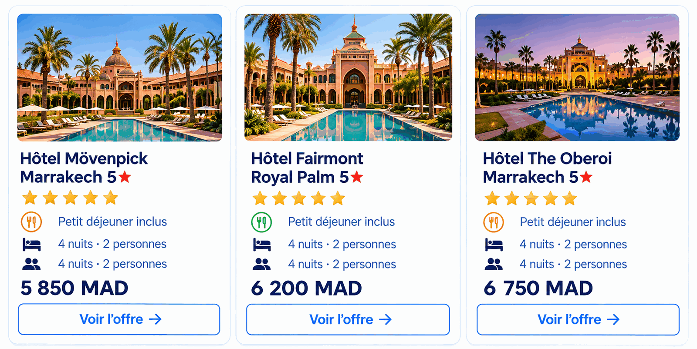
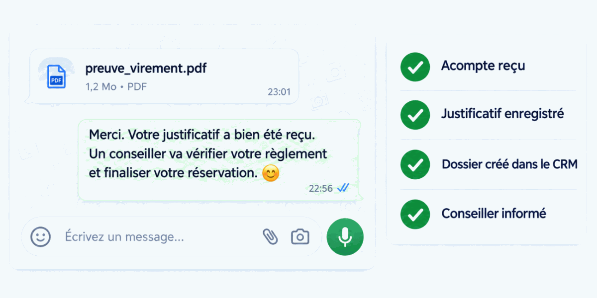
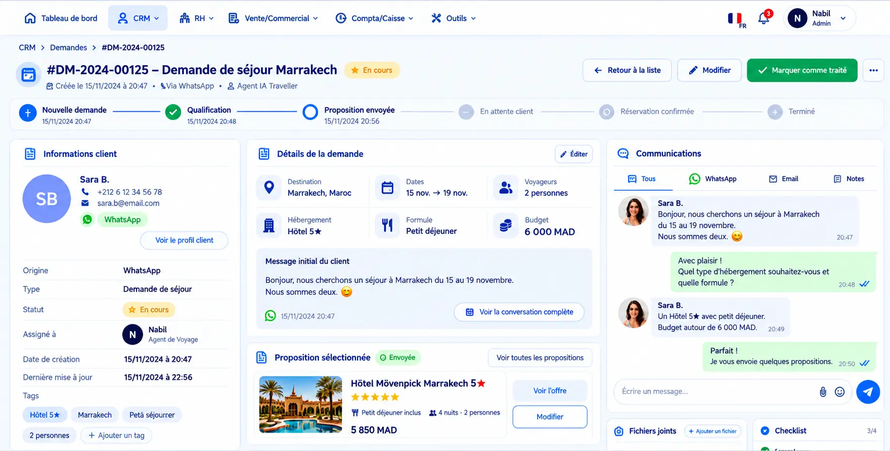
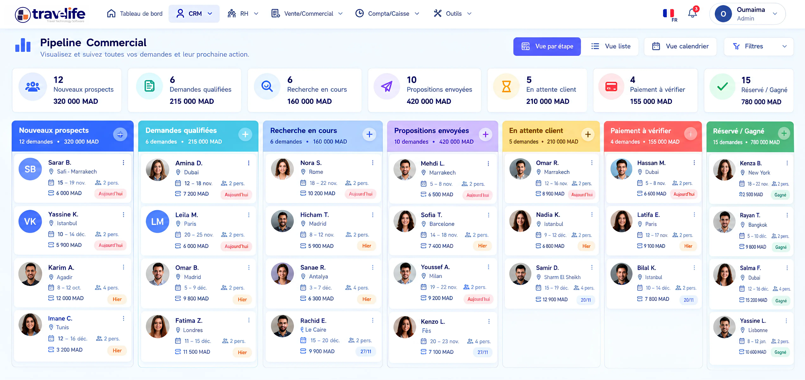

Ne ratez plus aucun voyageur : votre Agent IA & Chatbot 24h/24
Votre agence vend, même après la fermeture.
Un Agent IA (assistant intelligent) conçu pour le voyage et connecté à vos offres et à Travelife SmartCRM. Il discute avec vos clients, comprend leurs besoins, cherche vos produits et prépare la vente. Puis il passe le relais à votre équipe.
Avec plaisir ! Pour quelles dates, et quel budget par personne ? Préférez-vous un hôtel en centre-ville ?23:41
- 4 pax
- 18 → 25 déc.
- Budget 36 k MAD
- Hôtel 4★
Parfait ! Une conseillère vous envoie 3 propositions demain à 9h ✈️23:43
L’essentiel Agent IA & chatbot pour agences de voyages
- DisponibilitéL’Agent IA Travelife répond aux voyageurs 24 h/24, y compris le soir et le week-end, sur WhatsApp et sur le chat du site web de l’agence.
- QualificationL’Agent IA Travelife comprend les messages écrits et vocaux, en plusieurs langues, et pose les questions utiles (dates, budget, voyageurs) jusqu’à obtenir une demande complète.
- Recherche réelleL’Agent IA Travelife interroge le catalogue Travelife B2C, les contrats hôteliers et les API partenaires de l’agence au lieu de donner des réponses génériques.
- CRMChaque échange, document et préférence est centralisé dans Travelife SmartCRM, avec un résumé rédigé par l’IA pour le conseiller.
- Meta AdsLes contacts (leads) issus de vos publicités Facebook et Instagram arrivent automatiquement dans Travelife SmartCRM.
- Rôle humainL’Agent IA Travelife ne remplace pas les conseillers voyage ; il prépare la vente et passe le relais à l’équipe pour conclure.
Vos clients parlent naturellement. Votre Agent IA comprend leur voyage.
Un message, un vocal ou une simple conversation suffit. L’Agent IA pose les bonnes questions jusqu’à obtenir une demande complète et exploitable.
- Messages vocaux
- Chat sur votre site
- Plusieurs langues
✦ Transcription & intention détectée
Il ne se contente pas de discuter. Il recherche réellement vos offres.
L’Agent IA consulte en direct vos catalogues et vos bases de données connectées, puis propose les offres réellement disponibles.

L’Agent IA présente vos offres et gère les modalités de paiement.
Le client reçoit des propositions claires, avec photos, détails et prix. Il pose ses questions, compare, puis reçoit aussitôt les moyens de paiement sécurisés pour confirmer son voyage.
La première proposition me convient. Comment puis-je réserver ?
Parfait ! Je peux vous présenter les modalités de paiement prévues par l’agence pour poursuivre la réservation.

Accompagnez le client jusqu’à la prochaine étape.
L’Agent IA confirme chaque étape en temps réel : le client avance sans attendre, et votre équipe reste informée.
- Acompte reçu
- Justificatif enregistré
- Dossier CRM créé
- Conseiller informé
Votre conseiller retrouve tout. Sans repartir de zéro.
Dans Travelife SmartCRM, chaque prospect a son historique : la demande, les échanges, les offres, les documents, les notes et la prochaine action.

L’IA fait avancer la vente. Votre équipe garde la main.
Le parcours est automatisé du premier message à la vente : vous transformez plus de demandes en ventes, sans travail en plus.
Point d’entrée
Client WhatsApp / Web
Traitement IA
Agent IA Travelife
Synchronisation
Travelife SmartCRM
Conclusion
Conseiller voyage
Plusieurs agents. Un seul SmartCRM.
Chaque agent a une mission précise et suit les informations et les règles que vous définissez.
Pas un chatbot générique. Un Agent IA intégré à votre TravelTech.
Votre Agent IA travaille avec tous vos outils de voyage Travelife (votre « TravelTech ») : Meta Ads, WhatsApp, Travelife B2C, vos moteurs de réservation et Travelife SmartCRM.
Agent IA commercial
Répond, qualifie et présente vos offres.
Agent IA Lead Meta
Ajoute automatiquement dans le CRM les contacts issus de vos publicités Facebook et Instagram.
Agent IA de recherche
Interroge votre catalogue et vos moteurs.
Agent IA de relance
Prépare des relances adaptées à chaque client et à son projet.
Assistant du conseiller
Résume la relation et suggère la prochaine action.
Chaque opportunité avance avec votre équipe.
Visualisez en un coup d’œil toutes vos demandes et leur prochaine action, du premier message à la réservation confirmée.

Questions fréquentes sur l’Agent IA Travelife
Tout savoir sur l’Agent IA Travelife : synchronisation avec Meta et WhatsApp, connexion à vos outils de voyage (TravelTech) et travail avec votre équipe de conseillers.
Voir l’Agent IA en action ?
Une démonstration sur vos propres offres et vos canaux.
L’Agent IA remplace-t-il nos conseillers voyage ?
Absolument pas. L’Agent IA a été pensé comme un assistant ultra-performant pour décharger votre équipe des tâches répétitives. Il prend en charge le premier accueil 24 h/24, qualifie précisément les besoins (budget, dates, composition de la famille, envies particulières) et prépare le terrain. Dès que le projet se précise, un conseiller humain prend le relais en disposant de toutes les clés pour conclure la vente et apporter sa touche d’expertise humaine.
Quelles sont les principales missions quotidiennes de l’Agent IA ?
L’Agent IA agit comme un véritable coéquipier digital pour votre agence :
- Disponibilité immédiate : répondre aux voyageurs de jour comme de nuit, en moins d’une minute.
- Qualification rigoureuse : poser les bonnes questions pour ne rater aucun détail important du voyage.
- Recherche dynamique : interroger en temps réel vos catalogues et vos tarifs.
- Suivi et relance : relancer les prospects au bon moment pour transformer davantage de devis en ventes.
Qu’est-ce qu’un agent IA pour agence de voyages ?
Un agent IA pour agence de voyages est un assistant conversationnel spécialisé dans le tourisme, capable d’échanger avec les voyageurs, de comprendre leur projet et d’agir dans les outils de l’agence. L’Agent IA Travelife est connecté aux offres de l’agence et à Travelife SmartCRM : il accueille le client sur WhatsApp ou sur le site web, qualifie sa demande (destination, dates, nombre de voyageurs, budget), recherche les produits disponibles, présente des propositions avec photos et prix, puis transmet un dossier complet à un conseiller. L’agence continue ainsi à vendre même après la fermeture.
Quelle différence entre un chatbot classique et l’Agent IA Travelife ?
Un chatbot classique suit des scénarios figés et renvoie des réponses génériques. L’Agent IA Travelife comprend le langage naturel, y compris les messages vocaux, et il agit : il interroge réellement votre catalogue Travelife B2C, vos grilles hôtelières et vos API partenaires pour proposer des disponibilités et des tarifs actualisés. Il présente les modalités de paiement prévues par l’agence, rattache les justificatifs au dossier et synchronise tout dans Travelife SmartCRM. C’est un Agent IA intégré à votre TravelTech, pas un chatbot générique posé sur votre site.
Comment s’effectue la transition entre l’IA et un conseiller humain ?
Dès qu’un client formule une demande complexe, demande à parler à un humain ou que l’IA détecte une opportunité à fort potentiel, le dossier est instantanément basculé dans le CRM. Une notification est envoyée à l’équipe avec un résumé complet de la conversation. Le voyageur n’a rien à répéter : l’échange continue sans interruption.
Sur quels canaux l’Agent IA peut-il interagir avec les clients ?
L’Agent IA s’installe sur votre site web B2C (sous forme de bulle de chat moderne et interactive) ainsi que sur WhatsApp, canal incontournable où les voyageurs apprécient d’échanger rapidement pour organiser leurs vacances ou poser des questions sur leur réservation.
L’Agent IA Travelife répond-il aux clients en plusieurs langues ?
Oui. L’Agent IA Travelife échange avec les voyageurs dans plusieurs langues, par exemple en français ou en arabe, à l’écrit comme à l’oral via les messages vocaux WhatsApp. Il transcrit le message, détecte l’intention du client (type de séjour, destination, période, nombre de voyageurs) et structure ces informations dans Travelife SmartCRM. Votre conseiller retrouve ensuite une demande claire et exploitable, quelle que soit la langue utilisée par le voyageur au départ.
Les clients peuvent-ils envoyer des messages vocaux ou utiliser le langage naturel ?
Oui, totalement. Qu’il s’agisse d’un message écrit détaillé ou d’une note vocale sur WhatsApp, l’Agent IA analyse le langage courant et les nuances des demandes des voyageurs. Il comprend le contexte et structure automatiquement les informations pour alimenter votre base de données.
Comment l’IA accède-t-elle à nos offres et tarifs en temps réel ?
L’Agent IA est directement relié à vos outils de voyage (votre écosystème TravelTech) : votre catalogue Travelife B2C, vos grilles contractuelles hôtelières et vos API partenaires. Il ne fournit pas de réponses génériques : il interroge de vraies bases de données pour proposer des disponibilités exactes et des tarifs actualisés.
Comment fonctionne la synchronisation avec les publicités Meta (Facebook Ads / Instagram Ads) ?
Notre CRM est directement connecté à l’écosystème Meta. Dès qu’un prospect remplit un formulaire de contact (lead generation) sur Facebook Ads ou Instagram Ads, ses coordonnées et ses informations de voyage sont ajoutées automatiquement et instantanément dans votre SmartCRM. L’IA peut même lancer un premier contact très rapide par WhatsApp ou SMS, pour qualifier le prospect pendant que son intérêt est encore vif.
Comment fonctionne la synchronisation avec le Travelife SmartCRM ?
Chaque interaction, chaque critère qualifié, chaque préférence exprimée et chaque document partagé est automatiquement centralisé dans le Travelife SmartCRM. Votre équipe commerciale retrouve l’historique complet et un résumé rédigé par l’IA : plus aucune ressaisie manuelle.
Pouvons-nous connecter nos propres fournisseurs et contrats négociés ?
Tout à fait. Travelife est une plateforme ouverte : vous pouvez y intégrer vos propres contrats hôteliers négociés, vos accords de partenariat et vos flux spécifiques. L’Agent IA les utilise ensuite de lui-même pour construire ses propositions de voyages.
Quelles solutions de paiement et d’encaissement sont prises en charge ?
Travelife s’intègre à vos solutions d’encaissement et à vos passerelles de paiement sécurisées habituelles. L’Agent IA peut guider vos clients et collecter les justificatifs ou se connecter aux passerelles locales et internationales telles que le CMI (idéal pour le marché marocain), Payzone, Stripe, PayPal, ainsi qu’à d’autres solutions sur mesure selon votre configuration.
Comment se déroule la gestion sécurisée des acomptes et reçus ?
En accord avec vos processus internes, l’Agent IA présente les conditions de réservation et peut recevoir directement les preuves de paiement (comme un ordre de virement pour un acompte). Le document est immédiatement rattaché au dossier client dans le SmartCRM, permettant à votre service financier de valider le dossier en un clin d’œil.
Quelles sont les garanties en matière de sécurité et de confidentialité des données ?
La plateforme repose sur une infrastructure cloud hautement sécurisée : chiffrement des échanges (HTTPS), gestion stricte des rôles et des accès de chaque collaborateur, et sauvegardes automatiques en continu. Les données de vos clients sont ainsi protégées.
Quel est le délai de déploiement de l’Agent IA pour notre agence ?
Grâce à l’intégration native avec l’écosystème Travelife, la mise en place est rapide. Nos experts paramètrent les scénarios de conversation selon votre positionnement, connectent vos canaux (site web et WhatsApp) et forment vos équipes en quelques jours seulement (voir notre accompagnement).
L’automatisation commerciale Travelife SmartCRM peut-elle être financée par GO SIYAHA ?
Oui, pour les agences de voyages éligibles au Maroc. Travelife est référencée chez Maroc PME dans le cadre du programme GO SIYAHA, qui soutient la transformation digitale des agences. Ce programme peut financer jusqu’à 90 % de plusieurs solutions, dont l’automatisation commerciale avec Travelife SmartCRM, le site web B2C et le logiciel de gestion commerciale. Pour vérifier votre éligibilité et connaître les démarches, contactez l’équipe Travelife au (+212) 5 21 50 06 05 ou à contact@travelife.ma.
Comment obtenir une démonstration de l’Agent IA Travelife ?
Il suffit de demander une démonstration depuis la page contact, par téléphone au (+212) 5 21 50 06 05 ou par e-mail à contact@travelife.ma. Nos experts vous montrent l’Agent IA en action sur vos propres offres et vos canaux (site web et WhatsApp) : conversation avec un voyageur, qualification de la demande, recherche dans votre catalogue, puis passage de relais à un conseiller dans Travelife SmartCRM. Vous pouvez aussi consulter les tarifs du logiciel Travelife.
Quel retour sur investissement (ROI) peut-on anticiper ?
L’Agent IA capte les demandes 24 h/24, en particulier le soir et le week-end, quand les agences traditionnelles sont fermées. Il évite aussi à vos conseillers de perdre du temps sur des demandes non qualifiées. Résultat constaté par les agences : un taux de conversion nettement plus élevé et des clients qui obtiennent une réponse immédiate, ce qui renforce fortement leur compétitivité.
Prêt à digitaliser votre agence de voyage ?
Démonstration gratuite et personnalisée de 30 minutes. Nous analysons votre activité et vous montrons comment Travelife vous fait gagner du temps — et jusqu’à 90 % financé avec GO SIYAHA.